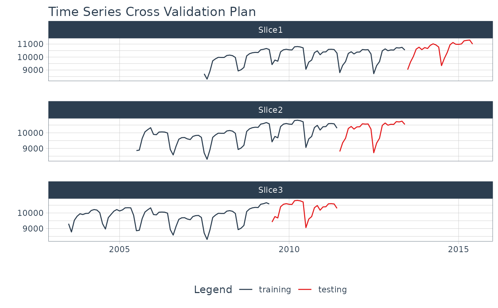
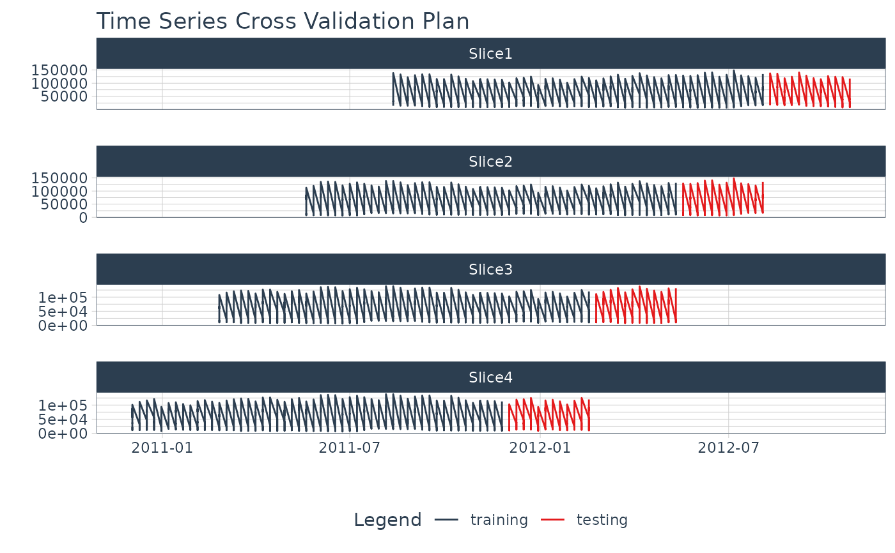

Create rsample cross validation sets for time series.
This function produces a sampling plan starting with the most recent
time series observations, rolling backwards. The sampling procedure
is similar to rsample::rolling_origin(), but places the focus
of the cross validation on the most recent time series data.
Usage
time_series_cv(
data,
date_var = NULL,
initial = 5,
assess = 1,
skip = 1,
lag = 0,
cumulative = FALSE,
slice_limit = n(),
point_forecast = FALSE,
...
)Arguments
- data
A data frame.
- date_var
A date or date-time variable.
- initial
The number of samples used for analysis/modeling in the initial resample.
- assess
The number of samples used for each assessment resample.
- skip
A integer indicating how many (if any) additional resamples to skip to thin the total amount of data points in the analysis resample. See the example below.
- lag
A value to include an lag between the assessment and analysis set. This is useful if lagged predictors will be used during training and testing.
- cumulative
A logical. Should the analysis resample grow beyond the size specified by
initialat each resample?.- slice_limit
The number of slices to return. Set to
dplyr::n(), which returns the maximum number of slices.- point_forecast
Whether or not to have the testing set be a single point forecast or to be a forecast horizon. The default is to be a forecast horizon. Default:
FALSE- ...
These dots are for future extensions and must be empty.
Value
An tibble with classes time_series_cv, rset, tbl_df, tbl,
and data.frame. The results include a column for the data split objects
and a column called id that has a character string with the resample
identifier.
Details
Time-Based Specification
The initial, assess, skip, and lag variables can be specified as:
Numeric:
initial = 24Time-Based Phrases:
initial = "2 years", if thedatacontains adate_var(date or datetime)
Initial (Training Set) and Assess (Testing Set)
The main options, initial and assess, control the number of
data points from the original data that are in the analysis (training set)
and the assessment (testing set), respectively.
Skip
skip enables the function to not use every data point in the resamples.
When skip = 1, the resampling data sets will increment by one position.
Example: Suppose that the rows of a data set are consecutive days. Using skip = 7
will make the analysis data set operate on weeks instead of days. The
assessment set size is not affected by this option.
Lag
The Lag parameter creates an overlap between the Testing set. This is needed when lagged predictors are used.
Cumulative vs Sliding Window
When cumulative = TRUE, the initial parameter is ignored and the
analysis (training) set will grow as
resampling continues while the assessment (testing) set size will always remain
static.
When cumulative = FALSE, the initial parameter fixes the analysis (training)
set and resampling occurs over a fixed window.
Slice Limit
This controls the number of slices. If slice_limit = 5, only the most recent
5 slices will be returned.
Point Forecast
A point forecast is sometimes desired such as if you want to forecast a value "4-weeks" into the future. You can do this by setting the following parameters:
assess = "4 weeks"
point_forecast = TRUE
Panel Data / Time Series Groups / Overlapping Timestamps
Overlapping timestamps occur when your data has more than one time series group. This is sometimes called Panel Data or Time Series Groups.
When timestamps are duplicated (as in the case of "Panel Data" or "Time Series Groups"),
the resample calculation applies a sliding window of
fixed length to the dataset. See the example using walmart_sales_weekly
dataset below.
See also
time_series_cv()andrsample::rolling_origin()- Functions used to create time series resample specifications.plot_time_series_cv_plan()- The plotting function used for visualizing the time series resample plan.time_series_split()- A convenience function to return a single time series split containing a training/testing sample.
Examples
library(dplyr)
# DATA ----
m750 <- m4_monthly %>% dplyr::filter(id == "M750")
# RESAMPLE SPEC ----
resample_spec <- time_series_cv(data = m750,
initial = "6 years",
assess = "24 months",
skip = "24 months",
cumulative = FALSE,
slice_limit = 3)
#> Using date_var: date
resample_spec
#> # Time Series Cross Validation Plan
#> # A tibble: 3 × 2
#> splits id
#> <list> <chr>
#> 1 <split [72/24]> Slice1
#> 2 <split [72/24]> Slice2
#> 3 <split [72/24]> Slice3
# VISUALIZE CV PLAN ----
# Select date and value columns from the tscv diagnostic tool
resample_spec %>% tk_time_series_cv_plan()
#> # A tibble: 288 × 5
#> .id .key id date value
#> <chr> <fct> <fct> <date> <dbl>
#> 1 Slice1 training M750 2007-07-01 8710
#> 2 Slice1 training M750 2007-08-01 8300
#> 3 Slice1 training M750 2007-09-01 8910
#> 4 Slice1 training M750 2007-10-01 9710
#> 5 Slice1 training M750 2007-11-01 9870
#> 6 Slice1 training M750 2007-12-01 9980
#> 7 Slice1 training M750 2008-01-01 9970
#> 8 Slice1 training M750 2008-02-01 9970
#> 9 Slice1 training M750 2008-03-01 10120
#> 10 Slice1 training M750 2008-04-01 10150
#> # ℹ 278 more rows
# Plot the date and value columns to see the CV Plan
resample_spec %>%
plot_time_series_cv_plan(date, value, .interactive = FALSE)

# PANEL DATA / TIME SERIES GROUPS ----
# - Time Series Groups are processed using an *ungrouped* data set
# - The data has sliding windows applied starting with the beginning of the series
# - The seven groups of weekly time series are
# processed together for <split [358/78]> dimensions
walmart_tscv <- walmart_sales_weekly %>%
time_series_cv(
date_var = Date,
initial = "12 months",
assess = "3 months",
skip = "3 months",
slice_limit = 4
)
#> Data is not ordered by the 'date_var'. Resamples will be arranged by `Date`.
#> Overlapping Timestamps Detected. Processing overlapping time series together using sliding windows.
walmart_tscv
#> # Time Series Cross Validation Plan
#> # A tibble: 4 × 2
#> splits id
#> <list> <chr>
#> 1 <split [364/84]> Slice1
#> 2 <split [364/84]> Slice2
#> 3 <split [364/84]> Slice3
#> 4 <split [364/84]> Slice4
walmart_tscv %>%
plot_time_series_cv_plan(Date, Weekly_Sales, .interactive = FALSE)
